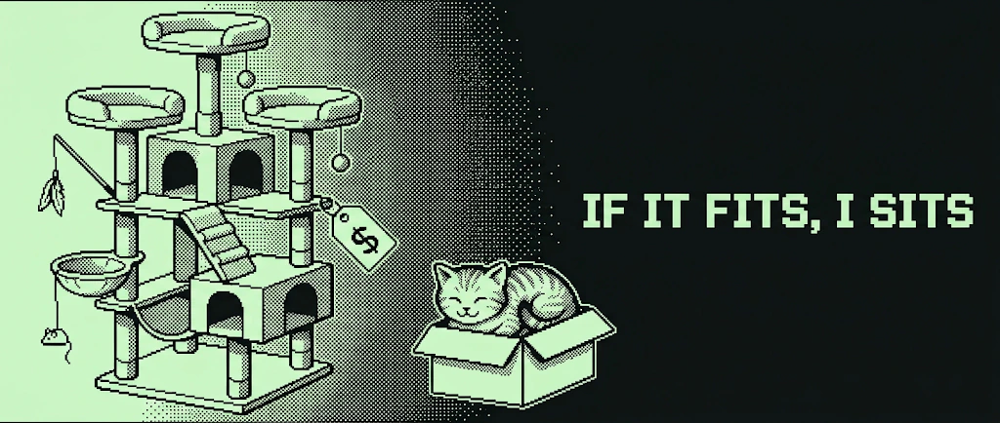

02 / 02
You're Paying for Someone Else's Problem
When good practices turn out to be our biggest problem

Almost every line of code you run carries an opinion, and most of them are not yours. They came from a library author, a conference talk, a language designer, someone who had a completely different problem than the one sitting on your desk right now. Their opinion was probably right. For them. You still pay for it, on every call, inside a loop you have never looked at.
Let's start with where those opinions come from.
Everyone is right, and that is the problem
You see, becoming a Software Engineer is one of the most frustrating paths out there. A big reason for that feeling is the fact that there are so many different ways of achieving similar goals. Start with the fact that one has to decide between a set of languages. Is C better than Rust? Python over R? What about Java? Should I switch to Go? As developers, often and inevitably, we end up trying everything, always convincing ourselves we have found the best way of writing software.
And it doesn't stop there. The paradigms that carry the code structure also become subject to taste and, of course, to experience. Someone who has written OOP their whole life, well, has a lot more fun writing abstract classes than someone coming from procedural code, or functional code, or whatever it is as long as it composes. And to make matters worse, the disagreements scale.
To do defensive programming or not. To do inline comments or not. To do documentation or not. To CamelCase or not.
To be or not to be...
Here's the part nobody puts on the slide: every one of those opinions ships with a bill attached, and the bill is paid at runtime, by you.
On the other end of the spectrum
Performance Engineering, on the other hand, has a much more grounded baseline for what matters in good software. The means become opaque. The ends have the final word. And what are the ends? Metrics. Numbers, the most boring, gray and ruthless non-emotional beings. At least, if you ignore what mathematicians say.
Latency, throughput, bandwidth, overhead, the yada yada yada. They are basically saying out loud where the system performs, or, as we see in most cases, underperforms. If you have ever heard of terms like tokens / sec or cost / token, those are just examples of important metrics in the world of LLMs. These numbers are brutal. Hard to control, hard to be happy with, and most of the time, hard to beat.
One thing that comes from being in a long-term relationship with these numbers is that almost all software written out there carries opinions which are not the best fit for the context it ended up in. Best practices are better known for making software a commodity: you saw this pattern once, you have read similar code many times, and even though this is not your code, you immediately understand it. The problem? Nothing in life comes free. It's an exchange between readability, maintainability and ergonomics against the system's performance. And the worst kind of tradeoff: the silent kind.
A bill, with a name on it
In 2020, Discord told the story of a service called Read States. Its job was simple: to keep track of which channels and messages users have read. Because of how the app works, the service was hit every time a user connects, every time a message is sent, and every time a message is read. Truly a marvelous hot path, as hot as they get.
It was written in Go, and for most of its job, it was more than good enough. Most of the time, at least. It had a peculiar problem: every couple of minutes, latency just decided to spike. More regular than an atomic clock, it was always there. In such a hot environment, everything pointed at some memory management hitting hard.
After investigation, the team concluded the culprit for the spikes was none other than the Garbage Collector itself. The service barely produced any garbage, but that was not the point. Even in such a highly optimized system, the GC still had to walk the entire LRU cache, every cycle, just to prove that memory was still referenced. And the clock-like schedule? Go forces a collection at least once every two minutes, garbage or not. Since data lived in memory most of the time, they experimented by making the cache smaller, and the spikes got smaller too. But the tradeoff: the 99th percentile got worse, since the system was now missing the hot data, triggering a new trip to the database.
Trading one number for another, and getting nowhere.
A tracing collector's work grows with how much memory is alive, not with how much garbage you make. And Read States kept almost everything alive. So it paid, every two minutes, for as long as it ran on Go.
They rewrote it in Rust. With only basic optimization, it beat the hand-tuned Go version on latency, CPU and memory.
Rust doesn't make you immune, though. It just moves the opinions out of the runtime and into your types.
Hands on a practical example
Let's build something small. A data processing pipeline, in a single service. Events coming in, structured data comes out. In this scenario, we are gonna tackle the problem of handing off messages / events from a thread to another, let's call them the producer and the consumer threads, using some sort of in between structure, such as a channel or a ring buffer.
For the first prototype, we start with semantics. It's what everyone writes. It's what I write too. A struct whose purpose is to mimic the human comprehension. An event is a well defined set of attributes, including the topic of subscription, the payload carrying the data, and well, the instant we've received_at.
struct Event {
topic: String, // heap
payload: Vec<u8>, // heap
received_at: Instant,
}Can you imagine that, just by placing this structure within our system, we are already under-performing by a real margin? Not the sort of thing that "saves memory" or "speeds up by 10ms at scale". No. We are talking about the sort of performance costs, derived from a human perspective on how software should look, that quietly eat a big slice of your per-event budget, and turn crossing the margin of a million events per second, per core, into a fight. Just by that simple structure.
But... why?
Well, software syntax is a deceiving thing that hides a lot. Without the simplification of these languages, we would basically be writing code directly for the machine. And between common practices and limitations, some assumptions inevitably become hidden.
First, for that structure to even exist, the program must ask the allocator for a couple of allocations: one for topic, and another one for payload, both on the heap. The rest lives inline, wherever the struct itself happens to be. When the consumer thread receives that structure, it now owns it, heap data included, becoming responsible for freeing memory in a thread that didn't allocate it in the first place. This is the textbook scenario allocators like the least: they can handle it, but it's never free.
On a typical x86-64 Linux build (the compiler is free to reorder the fields), the memory layout looks like this:
If we assume that a small allocation on the heap costs about 10-50ns, the two allocations land around 20-100ns per event, and freeing them costs about the same again. At a million events per second on a single core, the whole budget is 1µs per event. That's up to a fifth of it spent doing basically nothing, just... managing memory!
Another problem is alignment, though not the kind the compiler worries about. Rust makes sure every field of Event is properly aligned, so reading a field is always cheap and predictable. But the CPU doesn't think in fields, it thinks in 64-byte cache lines. Our struct is exactly 64 bytes, yet it's only guaranteed to start on an 8-byte boundary. Put a few of them in a buffer, and unless you're lucky about where that buffer begins, every single event straddles two cache lines.
Worse, when the producer writes one slot while the consumer reads the one next to it, both cores fight over the same line, invalidating each other's cache on every write. It's called false sharing, and it's the kind of cost you'll never see in the code. It doesn't look like much, again, but every move between CPU and memory compounds over time.
And that's before following the pointers. The data we actually care about isn't even in the struct:
From here, it depends on one thing: how big is the payload? Case one: it's small. Sensor readings, price ticks, heartbeats. Hurray! If it fits, it sits: the whole event can fit in a single cache line. No heap, no pointers, nothing to chase.
#[repr(C, align(64))]
struct Event {
received_at: u64, // 8 nanos since start
topic: u16, // 2 interned at startup
len: u16, // 2
payload: [u8; 52], // 52 inline
}
const _: () = assert!(size_of::<Event>() == 64);Three things changed. First, the topic became a u16. Every topic we know about is stored once, in a table we build at startup, and the event just carries its index. That's called interning, and it turns comparing topics into a two-byte compare instead of walking a string. The catch is that the topics have to be known upfront, or the table has to grow at runtime.
Second, the Instant became plain nanoseconds since the service started. Third, the payload moved inside the struct, as a fixed 52-byte array. And repr(C, align(64)) pins it all down: the bytes sit in the order I wrote them, not in the order the compiler felt like, and every event owns exactly one cache line, with no straddling and no false sharing between neighbors.
Zero allocations. Zero pointers to follow. One event, one cache line. The price is right there in the type: 52 bytes of payload and not one byte more. A 4-byte event still burns the whole 64, and you traded that memory for the allocator, on purpose.
Case two: the payload is big. Not hurray. A 1 KB payload will never fit in a cache line, and dragging it along every time we route or filter an event would undo everything we just won. So the struct stops carrying the payload and starts describing it. The same move pays off even for small payloads, by the way, if most of the time you're routing and filtering and never actually reading the bytes.
#[repr(C)]
struct Event {
received_at: u64,
topic: u16,
len: u16,
off: u32, // running position in the arena, never resets
}
const _: () = assert!(size_of::<Event>() == 16);
struct MyCustomArena { /* one big allocation, handed out by offset */ }So what's an arena? It's one big block of memory, allocated once at startup, that we manage ourselves. Instead of asking the allocator for room every time a payload arrives, we copy the bytes into the next free spot and move a cursor forward. That's the whole allocation: an addition. Nothing gets freed one by one either. Here, the arena works like a ring: the writer keeps moving forward, wraps back to the start when it hits the end, and reuses the space the reader has already moved past.
Back to the struct: same fields as v2. The payload turned into an offset plus the len that was already sitting there, and the bytes moved into the arena. When the reader hasn't caught up and there's no room left, the arena hands back nothing. That "nothing" is your drop policy. And off never resets: it keeps counting as the arena wraps around, and the real position is just off modulo the arena size. If the writer has already lapped an event's off, those bytes belong to someone else now, and the reader can tell with a single comparison, instead of silently reading garbage. That's the reason this thing doesn't corrupt data.
Sixteen bytes. Four events per cache line, none of them straddling. Routing by topic, sorting by timestamp, batching by length: all of that now runs over a dense array, and the payload isn't dragged along for the ride. You walk into the arena only when you actually need the bytes.
And the two cases aren't a choice. Keep the bytes inline when they fit, point into the arena when they don't: Apache Arrow's StringView does exactly that, in 16 bytes.
Zoom out, and this is the whole machine. The producer takes events in, writes the bytes into the arena, and pushes a 16-byte descriptor into a ring buffer. The consumer pops descriptors, and follows them into the arena only when it actually needs the bytes.
Kind of crazy? It's how your network card already talks to the kernel: a ring of small descriptors pointing into preallocated buffers. Linux's AF_XDP exposes almost exactly this shape, and so does DPDK. We didn't invent anything, we just stopped hiding it behind a String.
It has a limitation, though. A ring-shaped arena assumes events are consumed roughly in order. If the consumer holds on to some payloads much longer than others, the writer can't move past them, and new events start getting dropped behind them. When that's your workload, a pool of fixed-size buffers, handed out and returned in any order, fits better. That's the route DPDK takes.
Three structs. Nobody got smarter, nothing got "optimized". We just stopped paying for decisions someone else made for us.
Concluding
The software you have must be built for what it is intended to do. That sounds obvious until you go looking for who decided what your code does on every call, and find out it was a stranger, solving a problem you don't have.
So when someone finally digs into the stack, the traces and the system, the result is usually not a clever new layer. It's a subtraction. Less indirection, fewer copies, fewer defaults nobody asked for.
Which raises the question for the next article: how do you find them?
Turns out the cat had it right all along. The tower is what we build for each other: it looks designed, it reads well, and it comes with a price tag. The box looks like nothing. Cruder, maybe even harder to read. But the machine doesn't care what looks good to us. It sits where it fits. The tower was never the point.